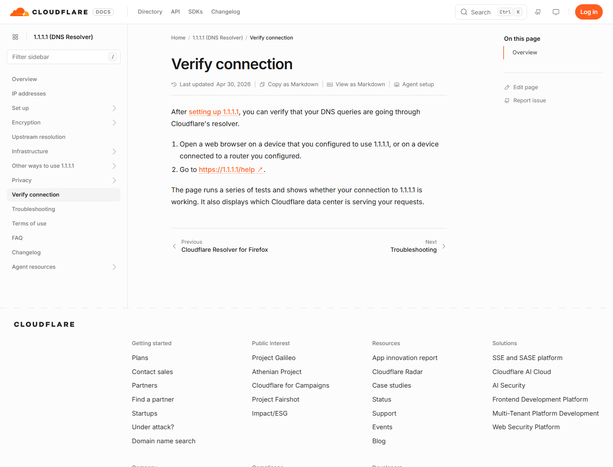

国外网站打不开时，很多人只看到“无法访问此网站”，随后开始随意更换浏览器、DNS 或网络工具。这样做偶尔能恢复，却很难解释原因，也容易留下系统代理、证书或路由配置。更可靠的方法是把连接拆成几个环节：浏览器生成请求、DNS 解析域名、系统选择路径、建立加密连接、网站返回内容。只要确定失败发生在哪一环，处理范围就会明显缩小。
一、先读懂浏览器给出的错误
记录完整错误代码比记录一句“打不开”更重要。不同浏览器文字略有差别，但通常能归入解析失败、连接超时、连接被重置、证书异常、网站拒绝和页面脚本失败几类。先截图，再记录网址和发生时间；排查中每次只改变一个条件。
| 常见表现 | 大致含义 | 首要检查 |
|---|---|---|
| DNS_PROBE_FINISHED_NXDOMAIN | 未获得有效域名解析结果 | 拼写、DNS、域名状态 |
| ERR_CONNECTION_TIMED_OUT | 规定时间内未建立连接 | 网络路径、防火墙、网站状态 |
| ERR_CONNECTION_RESET | 连接过程中被重置 | 安全软件、路由、服务端 |
| 证书无效或日期错误 | 安全证书校验未通过 | 系统时间、证书链、网络登录页 |
| 403 / Access Denied | 网站拒绝当前请求 | 页面说明、账号与站点规则 |
| 502 / 503 / 504 | 网关或服务暂时异常 | 网站状态、稍后重试 |
二、用最小对照环境确定问题范围
先测试三个对象：一个平时正常的网站、目标网站首页、目标网站的其他页面。接着做三组对照：同一设备换浏览器、同一网络换设备、同一设备换网络。结果通常能把范围缩小到浏览器、本机、当前网络或网站本身。
- 只有一个浏览器失败：检查扩展、缓存、Cookie、浏览器代理和版本。
- 只有一台设备失败：检查系统代理、防火墙、DNS、时间和安全软件。
- 同一网络全部失败：检查路由器、上游网络、组织策略和公共 Wi‑Fi 登录。
- 不同网络都失败：查看网站状态、域名状态、账号提示或服务端故障。
- 首页正常、功能失败：检查脚本、实时连接、文件域名和功能权限。
无痕窗口是很好的最小环境。它可以减少旧站点数据和部分扩展影响，但不能替代系统级检查。若无痕正常，优先处理普通窗口的站点数据和扩展；若无痕也失败，继续向系统与网络层排查。
三、DNS 解析应该怎样检查
DNS 的作用是把域名转换为服务器地址。浏览器提示找不到域名时，先确认网址拼写，再用系统命令查看解析结果：
nslookup example.com
如果命令返回地址，说明基础解析至少在该时刻完成，后续仍可能在连接或证书阶段失败。如果显示超时、服务器不可用或没有结果，检查路由器和系统 DNS。先记录原配置，再尝试重新连接网络、重启路由器或清理本机 DNS 缓存。企业网络的 DNS 可能用于内部域名和安全审计，不应未经许可更改。
Windows 可用 ipconfig /flushdns 清理本机缓存；macOS 不同版本的缓存命令可能不同，普通用户更适合先断开并重新连接网络。清理缓存只会丢弃旧记录，不会修复已经失效的域名、上游故障或网站服务器问题。

公共 DNS 并不是万能修复方案。选择 DNS 时应考虑隐私、稳定性、所在地网络表现和组织要求。修改后应再次运行解析测试并访问目标站点，确认是解析变化带来的结果，而不是碰巧恢复。
四、证书、时间与安全软件
HTTPS 证书用于验证网站身份并保护传输。遇到证书警告时，先核对电脑或手机的日期、时间、时区和自动校时。公共 Wi‑Fi 尚未完成登录时，也可能把请求重定向到认证页，造成证书不匹配；此时先访问网络提供方指定的登录入口。
某些安全软件会检查加密流量并安装本地证书。如果只有安装该软件的设备出现证书错误，应查看软件日志与证书配置，必要时联系管理员。不要把关闭全部安全功能作为长期办法，更不要在证书警告页面继续输入密码、银行卡或企业资料。
浏览器扩展也可能注入页面内容。出现页面错位、按钮无反应或跳转异常时，在无痕窗口测试并暂停网页改写类扩展。若地址栏域名与预期不符，应立即停止输入信息，检查默认搜索引擎、启动页和系统代理。
五、系统代理、路由与规则冲突
系统代理残留是常见原因。某个网络客户端退出后，如果系统仍指向已经停止的本地端口，浏览器就会无法连接。Windows 可在“设置—网络和 Internet—代理”中检查，macOS 可在当前网络的代理设置中查看。单位要求的代理不能随意关闭，应按原记录恢复。
如果使用了网络管理客户端，先确认配置已启用、目标请求确实进入客户端、策略选择有效，并查看日志中的域名、规则和连接错误。规则模式、全局模式和直连模式只描述进入客户端后的处理方式；应用是否把流量交给客户端，是另一个问题。TUN、系统代理、浏览器独立代理同时开启时，路径可能比预想复杂。
不要一次导入多份来源不明的规则，也不要为修复单个网站长期关闭所有分流。更好的做法是固定一个已知可用配置，只改一个选项并观察日志。需要恢复时，先关闭相关客户端，再确认系统代理、DNS 和路由回到原有状态。
六、网站侧限制、地区范围与服务故障
有些网站会根据服务地区、账号类型、年龄、付款资料、组织权限或异常请求决定是否提供内容。网络能够连通，不代表账号一定具备使用资格。页面若明确显示“不支持”“权限不足”“账号停用”或“需要验证”，应按照官方说明处理，而不是把所有提示都当成网络故障。
403 表示服务器理解请求但拒绝处理，429 通常与请求过多有关，5xx 多数指向服务端或网关问题。遇到 429 时停止自动刷新和批量请求；遇到 5xx 时查看网站状态页并稍后重试。若只有某个账号失败，而退出登录后公开页面正常，排查重点应转向账号和权限。
七、不同设备的实用步骤
Windows
检查系统时间、网络疑难解答、代理设置和 nslookup 结果。浏览器无痕窗口正常时，再处理扩展与站点数据。改动前保存原代理和 DNS 配置。
macOS
在“系统设置—网络”中查看当前服务的 DNS 与代理，确认日期时间自动设置。若装有多个网络扩展或内容过滤器，应逐项核对其状态，不要同时删除全部配置。
Android 与 iPhone
关闭飞行模式后重新连接，检查移动数据权限、省流量模式、私有 DNS、虚拟网络配置和系统时间。应用内网页失败时，复制官方链接到系统浏览器。只有相机、语音或上传失败时，单独检查应用权限。
八、十五分钟标准排查清单
- 截图并记录错误代码、网址和时间。
- 确认网址拼写与官方域名。
- 测试常用网站、目标首页和目标功能页。
- 使用无痕窗口，暂停网页改写扩展。
- 比较另一浏览器、另一设备和另一网络。
- 核对时间、时区、公共 Wi‑Fi 登录和证书提示。
- 运行域名解析测试，记录原 DNS 后再决定是否调整。
- 检查系统代理、网络客户端日志和规则命中。
- 查看网站状态页、账号通知和服务地区说明。
- 恢复无效改动，只保留经验证的设置。
如果仍无法解决，向网站支持或网络管理员提供错误代码、发生时间、设备系统、浏览器版本、网络类型、解析结果及对照测试结论。隐去账号、令牌、IP 地址中的敏感部分和私人内容。清晰的复现步骤比笼统描述更容易获得有效帮助。